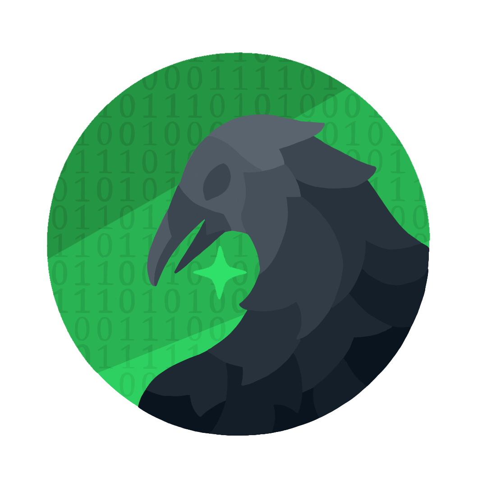

Pedro Henrique Rodrigues Ross
Desenvolvedor Full-Stack (Mobile & Web), com foco em Nest.js, Next.js, React Native, React, Node.js, Python, PostgreSQL e desenvolvimento de REST APIs. Sou estudante de Ciência da Computação (7º semestre), apaixonado por tecnologia e desenvolvimento de software. Atualmente atuo como freelancer, criando projetos web e mobile sob medida, sempre em busca de novos desafios que me permitam evoluir tecnicamente e entregar soluções cada vez mais eficientes e bem estruturadas.

LaborWaze
A LaborWaze é uma empresa de tecnologia especializada no desenvolvimento de sistemas web e mobile modernos, eficientes e personalizados. Criamos soluções digitais sob medida para empresas e profissionais que buscam otimizar processos, automatizar operações e impulsionar seus resultados por meio da inovação. Atuamos desde a concepção da ideia até a implementação completa do sistema, sempre priorizando desempenho, usabilidade, segurança e escalabilidade. Nosso compromisso é transformar necessidades reais em soluções práticas, intuitivas e preparadas para acompanhar o crescimento de cada negócio, desenvolvendo não apenas sistemas, mas ferramentas estratégicas que geram valor e evolução.